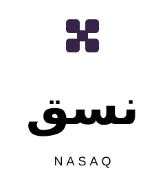
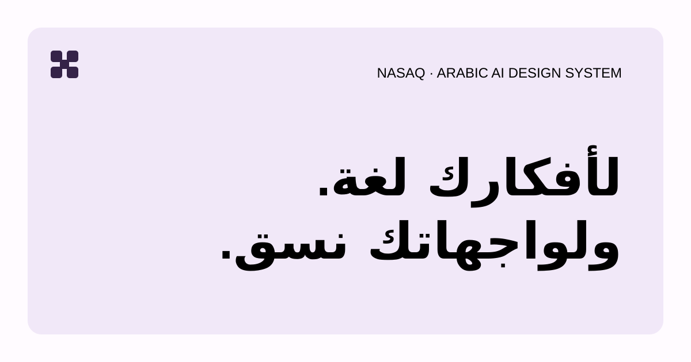

خمس وحدات مترابطة، وخط المراعي. حافظ على مساحة خالية تعادل ربع عرض الرمز، وحجم أدنى 24px للرمز و100px للتركيب.

الأوزان 300، 400، 700، 800. العناوين 700–800، النص 400. ارتفاع السطر 1.8 للنص. لا تباعد بين الحروف العربية. النص في SVG قابل للتحرير، والخط مضمّن للعرض؛ ثبّته عند التحرير في برامج لا تدعم الخط المضمّن.
بنفسجي للحضور ولافندر للأسطح، مع نص واضح ومساحات مريحة. حواف البطاقات 24–28px، وأزرار الدعوة بشكل كبسولة. متغيرات المكونات موثقة بشكل مستقل في نظام التصميم. ألوان النجاح والخطأ لها أدوار منفصلة عن الهوية. اكتب بلغة عربية مباشرة، مع فعل واضح وبدون وعود AI مبالغ فيها.
